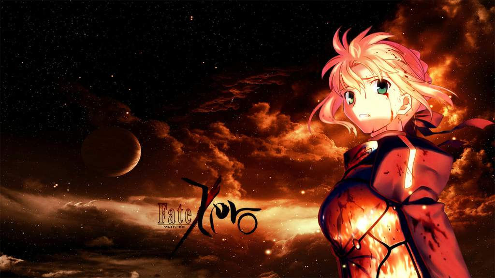
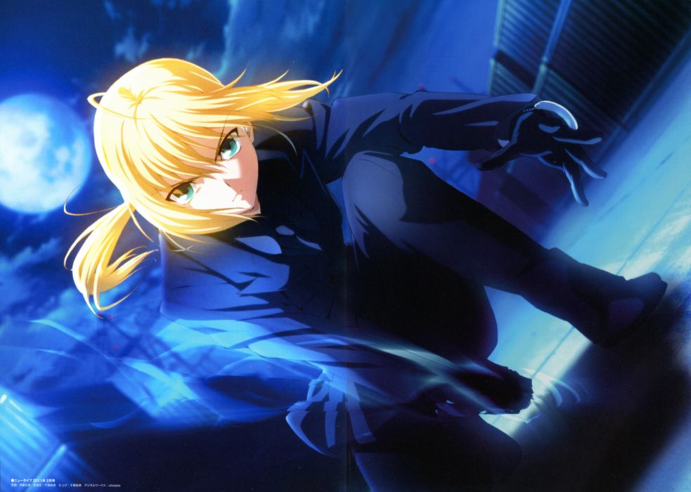
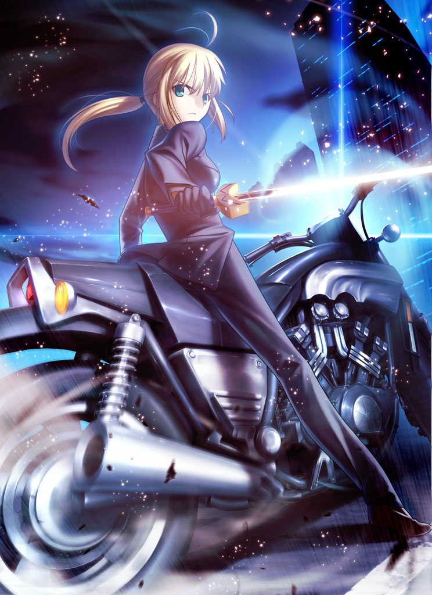
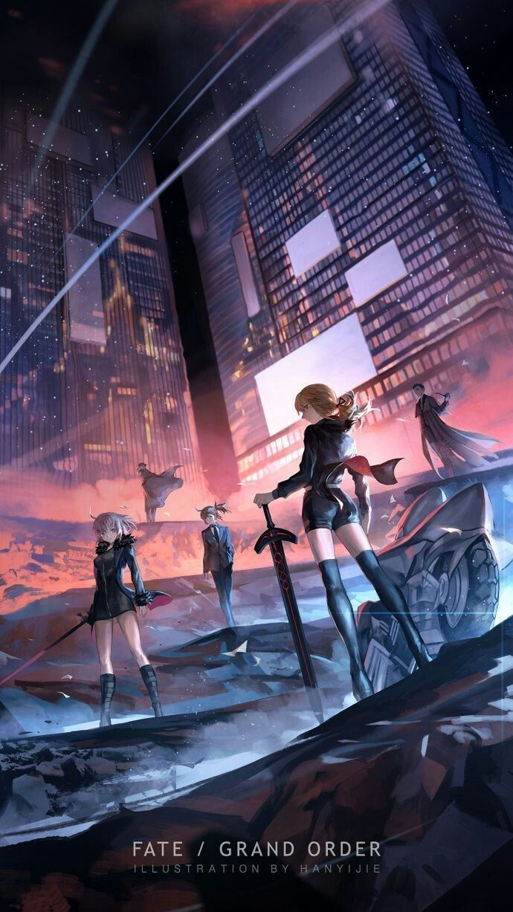

|  | |||
| Home | Sobre | Noticias | Contato |

SobreMentalidadePersonalidade: Saber é uma jovem de força de vontade que fala sempre com determinação. Ela é corajosa, determinada e determinada a ganhar o Santo Graal. Ela constantemente insiste que ela é um cavaleiro primeiro e que seu gênero é de pouca importância para ela. Ela está decidida a seguir sua própria moral, independentemente de táticas mais viáveis disponíveis, caso ela considere que elas sejam dissimuladas, levando a conflitos com Kiritsugu sobre a estratégia na Quarta Guerra do Santo Graal. Embora a obtenção do Santo Graal seja da maior importância, rejeitar seu cavalheirismo é algo que ela não fará em circunstâncias normais, mesmo que isso a coloque em desvantagem.Inteligência: Alta (Saber é um espadachim extremamente realizado adequado para sua classe, chocando-se com mesmo os heróis mais fortes na esgrima. Tornou-se o rei de uma nação próspera com a idade de quatorze anos, ela é um político hábil e um líder capaz, que é capaz de liderar eficazmente exércitos para a batalha e que rege a maioria da Grã-Bretanha até o final de seu governo. Ela também é conhecedor de magecraft, tendo sido aprendiz de Merlin em sua juventude.) Ficha de CombateDimensionalidade:3DStatus Existencial:ConcretoAtaque:Construção (Por Ar Invisível), Possível Edifício (Com Excalibur superou com facilidade o Assassino/ Sasaki Kojirou), cidade, talvez maior através de Caliburn (Por Caliburn que mesmo uma imitação poderia matar Héracles 7 vezes com um golpe), cidade com Excalibur (Excalibur é considerada uma arma Anti-Fortaleza por conta de seu grande poder destrutivo que consegue destruir qualquer Fortaleza, e também é superior a Caladbolg que destrói 3 topos de Montes), cidade, Possivelmente Planeta com Rhongomyniad (Rhongomyniad possui a mesma classificação base de Excalibur enquanto selada, além de perfurar seu alvo independente da armadura, a arma também existe para dar realidade e equilíbrio para o mundo, caso ela seja desfeita, toda a realidade do mundo não existirá).Defesa:Edifício Talvez maior devido à armadura (Saber tem a mesma classificação em resistência de Heracles que conseguiu sobreviver a Caladbolg que pode destruir 3 topos de Montes, assim como destruiu um cemitério inteiro), desconhecida com Avalon (Ignora todo e qualquer dano que não atinja a Sexta Dimensão/Reino das Fadas).Velocidade:Subsônico Em movimentação e ataques, Reação Supersônica (Lancelot conseguia desviar dos golpes de Gilgamesh que já ultrapassaram jatos em velocidade, assim como Archer que é inferior a Saber em agilidade conseguiu reagir a Gáe Bolg que viaja a Mach 2).Força:kN (Pode levantar e jogar todo um caminhão de reboque com facilidade).Vigor:Extremamente Alto (Lutou em várias batalhas sem se cansar em nenhum momento, ela também é tecnicamente incansável, enquanto seu mestre pode fornecer-la com energia mágica)Alcance:Mano-A-Mano Estendido fisicamente, vários metros através da (prana) Explosão, várias dezenas de metros com sua manipulação de vento, e vários quilômetros com Excalibur ativada.Fraquezas Físicas:Ela está vinculado por sua honra como um cavaleiro, assim, ela nunca confia em táticas desleais ou mais pragmáticas. Seu sexto sentido poderia ser enganado por métodos que Saber nunca experimentou antes, e ao contrário de outros agentes, saber não é um espírito heroico adequada, portanto, ela tem um corpo físico e incapaz de se transformar em forma de espírito(Mestre incapaz de fornecer mana), sem suas melhorias mágicas, saber é fisicamente comparável a uma fêmea normal de sua idade. Sua armadura pode ser negada por ataques anti-magia sido dissipada se ela ficar sem poder mágico. Ela abriga uma abundância de auto-aversão e pesar sobre suas ações como o Rei da Grã-Bretanha, o que pode ser explorado para irritá-la ou quebrá-la mentalmente.Fraquezas Psicológicas:Ela abriga uma abundância de auto-aversão e pesar sobre suas ações como o Rei da Grã-Bretanha, o que pode ser explorado para irritá-la ou quebrá-la mentalmente.Variações:Fate Zero e Stay Night.Poderes e HabilidadesCaracterísticas Físicas Sobre-Humanas, Possui uma bênção que a faz andar na água, Mestre Espadachim, possui um sexto sentido que faz fronteira com Precognição, Habilidade de "Rider", qualquer montagem ou veículo poderá ser montado/utilizado e usado para benefício próprio, sofrendo alterações no processo, regeneração (Rank I casualmente, com a Avalon seria Rank H), resistência (Mágica, Mental, Petrificação, Manipulação Espacial), imunidade a armas convencionais do mundo moderno, pode gerar explosões de mana que podem aumentar suas habilidades físicas caso as utilize como impulso, pode temporariamente acumular uma parede de energia mágica para bloquear um ataque de entrada, capaz de materializar sua armadura através de Magecraft, capaz de liberar rajadas de pressão do vento concentrado, pode fazer sua espada ficar invisível, pode criar barreiras de vento para proteção, excalibur gera um deslocamento no espaço em simultâneo, disparando um feixe concentrado de energia sagrada, imortalidade (Tipo 11), pode retirar-se para o mundo das fadas através de Avalon, assim, temporalmente isolando se da realidade, capaz de materializar e desmaterializar, sentir as emoções no local, pode se alimentar de almas e emoções para aumentar seu poder mágico interno, cura. |
 | ||
|  | |||
| Visite nosso instagram para apoiar nosso site. | |||